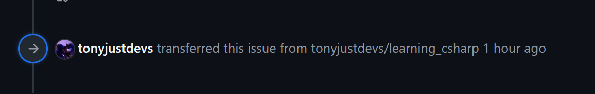
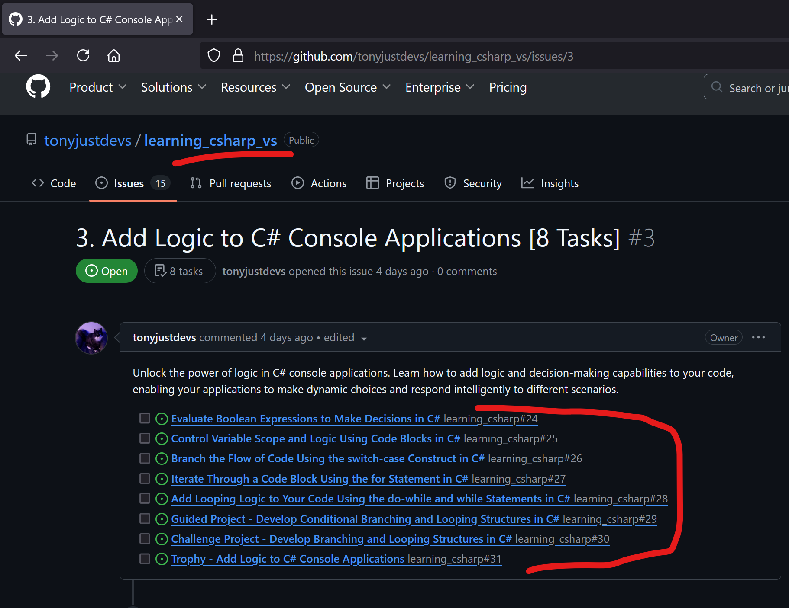
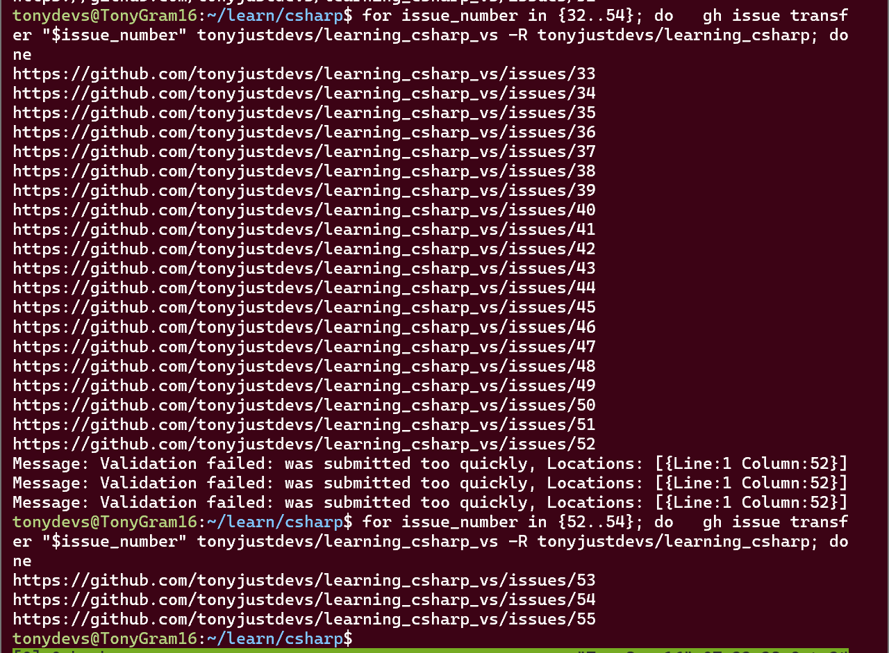

for issue_number in {24..31}
do
gh issue transfer "$issue_number" tonyjustdevs/learning_csharp_vs -R tonyjustdevs/learning_csharp
done1. Backstory (Short)
- I created an original repo tonyjustdevs/learning_csharp and created all the issues on this repo.
- I realised this repo isnt right for these issues and created a new repo tonyjustdevs/learning_csharp_vs for these issues.
- I want to transfer these issues to the new repo (in hindsight I could’ve just renamed the original repo?) and
- I did not want to do it manually.
1.1 Backstory (Long)
- I created a repo tonyjustdevs/learning_csharp via wsl (I did this for all my repos so far).
- Then I manually (and painstakingly) decomposed the course Foundational C# with Microsoft into 8 Parts.
- I mass copied the whole page above and then created an issue (to have an outline of the course on gh)
- Each part has about of 7-8 units, so I created issues for each part via the
Github PR: Issues Extensionin VSC. Each unit was a dot point prefixed with- [ ]so when it appears in the issue description, it is automatically a github task.- (I like converting lists into tasks because Github makes it pretty with a counter for each task etc)
- A previous post introduces how I setup GH-API via Python
- I then ran a python script that converts all tasks into issue description to be into new individual issues (This is like pressing the circle that post up when you hover your mouse over a task).
- Since I have had parts, I ran this for each of the 7 Parts.
- After this, I began the course and quickly realised I wanted to focus on building c# applications with Visual Studio not Visual Studio Code
- No other reason beyond already being familiar with VSC and wanting to learn a new IDE and
- VS isn‚Äôt a bad option for C# üòÖ
- I also want to keep the original repo for when I build apps with wsl and vsc, so I created a new repo c# app I built with Visual Studio: tonyjustdevs/learning_csharp_vs
- At first, I clicked the transfer issue button on the Github website, which is fine. But I figured, this isn’t what a software engineer would do. So lets use the api to do it.
2. Solution: Create a loop Bash via Github-API
2.1 Install Github API in wsl
- Run
sudo apt install gh. - Run
ghto see if install properly. Looks Good. - See
Command:issueavailable for us to call.
2.2 Get Authenticated
- If you don’t have ssh setup then here is a [Two Step Tutorial]
2.3 Test out a single Issue Transfer
- Run
gh issue transfer 23 tonyjustdevs/learning_csharp_vs -R tonyjustdevs/learning_csharp
- No error message and it looked like it [github issue event]

3. Transfer Multiple Issues with loop
3.1 Before Transfer
Issues are currently with original repo:
tonyjustdevs/learning_csharp
Recall, the goal is to transfer them to:
tonyjustdevs/learning_csharp_vs

3.2 Run Bash Loop
For [Part 3]: the issues are from [24] to [31]
The Response from Github is the same previously when we ran a single issue transfer! (A link to new issue number in the new repo).
3.3 Github Website
Look back to see the new issues:
Notice our issues are all updated to be part of the required repo now.
4. Complete Transfer Remaining Issues 32 to 54
Now for the rest of the issues:
- Part 4: Issues 32 to 39
- Part 5: Issues 40 to 45
- Part 6: Issues 46 to 52
- Part 7: Issues 53 to 54
4.1 [Before Transfer]
4.1.1 Part 4: Issues 32 to 39
4.1.2 [Before Transfer] Part 5: Issues 40 to 45
4.1.3 [Before Transfer] Part 4: Issues 46 to 52
4.1.4 [Before Transfer] Part 4: Issues 53 to 54
4.2 Run Code for Issues 32 to 54
Looks like theres a limit of 20 requests per minutes or something since it stopped:
- Issues 32 to 51 went through
- Halted at Issues 52
I ran the code again for Issue 52 to 54 a minute later and everything worked fine.

5. Mission Accomplished!
You’ll have to take my word that everything worked or:
- Choose one of the following issue links
parts, - Click any individual issue
units, - It’ll have an event saying it was
transferredon todays date [29-Oct-2024]:
- https://github.com/tonyjustdevs/learning_csharp_vs/issues/4
- https://github.com/tonyjustdevs/learning_csharp_vs/issues/5
- https://github.com/tonyjustdevs/learning_csharp_vs/issues/6
- https://github.com/tonyjustdevs/learning_csharp_vs/issues/7